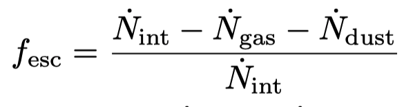

Table of Contents
\( \newcommand{\dif}{\,\mathrm{d}} \newcommand{\sci}[2]{#1 \times 10^{#2}} \def\num#1{\numx#1}\def\numx#1e#2{{#1}\mathrm{e}{#2}} \newcommand{\msun}{{\rm M}_\odot} \newcommand{\si}[1]{{\rm #1}} \)
[toc]
1 Galaxies
1.1 Radio Burst
1.1.1 Zhang2020,Zhang2020a
Review: The physical mechanisms of fast radio bursts, https://www.nature.com/articles/s41586-020-2828-1
- Fig. 2 | Cartoon pictures of the two general types of FRB radiation models. a, Pulsar-like models that invoke the magnetosphere of a compact object79 . b, GRB-like models that invoke relativistic shocks launched from a compact object101 . Magnetars could be the common source for both models.
- Dispersion measure tells about the integrated free election density of the intergalactic medium along line of sight.
Zhang2020a: "Slow" Radio Bursts from Galactic Magnetars?
- Fast Radio Bursts are when the line of sight is alined with the beam, while Slow Radio Burst with viewing angles somewhat outside the narrow emission beam.
1.2 Simulations
1.2.1 Santistevan2021 (hot paper 2021-02-19)
Hot paper narrative:
- Intro: In hierarchical structure formation, metal-poor stars in the MW originate from mergers of lower-mass galaxies. We therefore expect that metal-poor stars have isotropic random orbits.
- The key answer: what is the origin of the bias of metal-poor stars on prograde disk orbit and what can we learn from it?
- Their interpretation, or conclusion, is …
- GIZMO, FIRE project.
- fairly state-of-the-art hydro code for galactic simulations.
- radiative cooling/heating, including redshift-dependent cosmic UV background, track the abundance of 11 elements.
- Feedback processes: core-collapse and Ia supernovae, stellar winds, radiation pressure, photoionization, and photo-electric heating.
- Metal poor stars: do not model metal enrichment from Pop III stars. Start with gas elements with a Z floor of [Fe/H] = -4. They said this is supported by both simulations and observations, and they claim that the strength of the prograde bias does not depend on the initial low metallicity, so the choice of this number is unimportant.
- The setup of the simulations
- (Table 1): MW/M31 mass.
- Resolution: softening length of 4 for stars, 40 pc for DM particles, and 1 pc hydro.
- Galaxy sample should reflect typical formation histories of MW/M31 like galaxies.
- Selecting metal-poor stars in retrograde motion: Eq. 1-2.
- Fig.1: show all metal-poor star particles within their seleciton region. J_phi is the z-component of the angular momentum. Jz is another quantity. Small means it is near the disk plane.
- We see an overabundance of metal-poor stars line in the prograde box.
- track theses stars back in time to find their origin,
- Results
- 3.1
- Fig 2: prograde bias, versus stellar iron abundance. Thick black line show the medians across all 12 hosts. Consistent with MW observations.
- Green box: a little counter-intuitive.
- compare with H3 survey
- Fig 3: Same selection criteria as the H3 survey. The crosses are from the H3 survey.
- Fig 4: just show the result do not depend on the way that they spatially or kinematically select metal-poor stars
- 3.2, source of the prograde bias
- Fig 2: no large difference in the prograde bias for stars that formed in-situ versus ex-situ
- Fig 6: This primary merger typically contributed ∼ 24 per cent of all prograde metal-poor stars, higher than the fraction that formed in-situ.
- 3.3, How did the prograde bias evolve over time?
- Fig 7. arrow show primary, …, mergers. (see conclusion).
- Conclusion: For all of these variations, they conclude that the prograde bias is a global feature of these MW/M31-mass galaxies.
- Fig 7. arrow show primary, …, mergers. (see conclusion).
- 3.5 Correlations with galaxy properties
- Fig 8. Conclusion is no strong correlation is found.
- the median offset angle between the angular momentum vector of the host's disk and the angular momentum vector of the primary merger's orbit
- the lookback time when the primary merger occurred,
- the stellar mass of the primary merger,
- the stellar mass of the primary merger,
- *This indicates that the strength of the prograde bias has a complicated dependence on galaxy formation/merger history, which limits our immediate interpretation of how to translate recent observations of the pro- grade bias for the MW into a robust constraint on its formation history.*
- Fig 8. Conclusion is no strong correlation is found.
- 3.1
2 Galactic Escape Fraction
2.1 Observations
2.1.1 Overview
(From Izotov:2018) A few galaxies with high LyC escape fraction are known at high redshifts:
- Ion2 at z = 3.218 [@Vanzella:2015], \(\sim 60 \%\)
- Ion3 at z = 3.999 [@Vanzella:2018], \(\gtrsim 30\%\) A2218-Flanking at \(z \approx 2.5\), [@Bian:2017],
- up to \(72 \%\) five star-forming galaxies at z = 0.3. [@Izotov:2018]
2.1.2 Bian:2017
- A2218-Flanking, a lensed compact dwarf galaxy at redshift \(z \approx 2.5\).
- fesc \(\gtrsim 30\%\)
- Find that LyC photons are easier to escape in low-mass galaxies.
2.1.3 Izotov:2018
- 5 compact SFGs. seen in the Cosmic Origins Spectrograph (COS) NUV acquisition images.
- z in the range 0.3 - 0.43, fesc = 40 and 70% from two of the galaxies.
- fesc decreases with increasing M*, but with a large scatter
- We argue that one possible source driving the escape of ionizing radiation is stellar winds and radiation from hot massive stars.
- The most reliable selection criterion for LyC leakers is the peak separation of the Ly-alpha profile Vsep which is strongly anticorrelated to the LyC escape fraction fesc(LyC),
2.1.4 Shapley:2016
- Q1549-C25, \(\ge 51\%\)
- Model the spectral energy distribution infer fesc.
2.1.5 Vanzella:2018
- ~60%
2.1.6 Izotov2016
-
2.1.7 Summary
Cosmic Origins Spectrograph observations of five compact star-forming galaxies at redshifts \(z\) in the range 0.2993–0.4317 shows LyC emission with fesc(galaxy) in a range of 2-72 per cent.
Ion2 and Q1549-C25 are the only two \(z \sim 3\) galaxies with a direct spectroscopic detection of uncontaminated LyC emission. Escape fractions of \(\gtrsim 50\%\) is inferred from both of them based on simulations of the distribution of HI absorbers in both the intergalactic and circumgalactic medium \cite{Vanzella:2016} \cite{Shapley:2016}
[@Vanzella:2018] reported the highest redshift individually-confirmed LyC-leaky galaxy {Ion3} at z = 4, % and {A2218-Flanking} at \(z \approx 2.5\) is measured to have \(f_{\rm esc, gal} \gtrsim 30\%\) [@Bian:2017].
2.2 How to measure fesc from galaxies?
- Direct detection of leaking LyC flux.
2.2.1 Choi2020
- Choi2020 (2020ApJ…902…54C): new method, measure fesc from individual resolved stars by comparing the number of ionizing photons produced by stars to the number that are either absorbed by dust or consumed by ionizing the surrounding neutral hydrogen. Found substantial fesc (~25%) from NGC 4214 (local galaxy).
- Method:
- modeled SEDs of resolved stars within NGC 4214 to infer their intrinsic stellar properties, as well as the intervening dust: using a stellar SED fitting technique optimized for large resolved star datasets, called the Bayesian Extinction And Stellar Tool (BEAST; Gordon et al. 2016).
Formula:

- first term measured by combining ionizing photons produced by all stars in a region of interest, second term from the isotropically emitted extinction-corrected Hα recombination emission-line luminosity of the region. The first two termsare independent of viewing angle??
- third term is challenging: very along sightlines.
- Conclusion:
- demonstrate a new method for measuring the escape fraction of ionizing photons.
- supports the idea that starburst UV-faint dwarf galaxies can provide a sufficient amount of ionizing photons to the intergalactic medium.
- good writing:
Confirming whether faint star forming galaxies were indeed responsible for cosmic reionization requires constraining the fraction of LyC photons that escape (the "escape fraction", fesc) into the IGM.
To be consistent with reionizing the Universe by redshift z ∼ 6, fesc must be at least 10–30%, depending on the choice of the ionizing photon production efficiency and the faint-end properties (i.e., slope and the limiting magnitude) of the observed rest-frame UV luminosity functions (e.g., Ouchi et al. 2009; Finkelstein et al. 2012; Robertson et al. 2013; Bouwens et al. 2015; Khaire et al. 2016; Ishigaki et al. 2018).
fesc at a level of > 20% has been measured only very recently for a small number of galaxies based on direct detection of leaking LyC flux (e.g., Vanzella et al. 2012; Shapley et al. 2016; Vanzella et al. 2016; Bian et al. 2017; Naidu et al. 2017; Izotov et al. 2018a).
2.2.2 Chisholm2020:
Optically thin spatially resolved Mg II emission maps the escape of ionizing photons
- The first pass (title, abstract, introduction)
[X]Relavent?[X]Worth reading?
- The second pass (figures, references)
- What are the key results?
- Key references
- Izotov et al. 2016a: direct detection of leaking LyC flux, found fesc > 5-20%
- Summary:
- Question addressed: Method of measuring fesc(LyC) from galaxies
- Context:
- Method
- new Keck Cosmic Web Imager spatially-resolved spectroscopy of the resonant Mg ii 2800 Å doublet from a redshift 0.36 galaxy, J1503+3644,
- The measured flux ratio of the red and blue Mg ii emission line doublet estimates the neutral gas column density —> relative escape fraction
- Using the Reddy et al. (2016) attenuation law to fit theoretical stellar continuum models to the observed FUV stellar continuum features. —> absolute escape fraction
- Conclusion: Mg ii can predict escape fraction within the Epoch of Reionization.
2.2.3 Izotov et al. 2016a
Questions addressed: direct detection of leaking LyC flux
Context: source of reionization
Method: reddening law, adopting the extinction curve from Cardelli et al. 1989